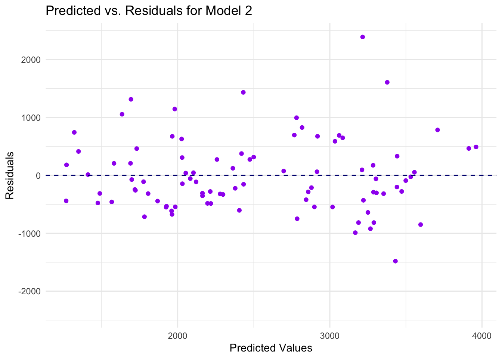

create plot of DV by time with ID as a group factor
# Plotting using ggplot2p1 <-ggplot(mydata, aes(x = TIME, y = DV, group = ID, color =factor(DOSE))) +geom_line() +labs(title ="Line Plot of DY and time by ID Stratified by Dose",x ="Time",y ="DV") +scale_color_manual(values =c("25"="blue", "37.5"="green", "50"="red")) +theme_minimal()plot(p1)
data cleaning
# Filter rows where OCC is equal to 1d1 <- mydata %>%filter(OCC ==1)# Sum DV of each IDd2 <- d1 %>%filter(TIME !=0) %>%# Exclude observations with TIME = 0group_by(ID) %>%summarise(Y =sum(DV))# Data frame only include TIME == 0d3 <- d1 %>%filter(TIME ==0)# Combine data frames d2 and d3 togetherd4 <-left_join(d2, d3, by ="ID")# A little bit more data cleaningd5 <- d4 %>%mutate(SEX =factor(SEX),RACE =factor(RACE)) %>%select(Y, DOSE, AGE, SEX, RACE, WT, HT)# Save the cleaned datasave_data_location <- here::here("fitting-exercise","data","processed-data","processeddata.rds")saveRDS(d5, file = save_data_location)
# A bar chart of total drug by aged5_p1 <- d5 %>%group_by(AGE) %>%summarize(avg_drug_level =mean(Y))p1 <-ggplot(d5_p1, aes(x = AGE, y = avg_drug_level)) +geom_bar(stat ="identity", position ="dodge", alpha =0.7) +labs(title ="Bar chart of Total Drug Level vs Age",x ="Age",y ="Total Drug Level") +theme_minimal()plot(p1)
# scatterplot of total drug by weightp2 <-ggplot(d5, aes(x = WT, y = Y)) +geom_point() +labs(title ="Scatterplot of Total Drug Level vs Weight",x ="Weight",y ="Total Drug Level") +theme_minimal()plot(p2)
# boxplot of total drug by dose levelp3 <-ggplot(d5, aes(x =as.factor(DOSE), y = Y)) +geom_boxplot() +labs(title ="Boxplot of Total Drug Level vs Dose",x ="Dose Level",y ="Total Drug Level") +theme_minimal()plot(p3)
# boxplot of total drug by sexp4 <-ggplot(d5, aes(x =as.factor(SEX), y = Y)) +geom_boxplot() +labs(title ="Boxplot of Total Drug Level vs Sex",x ="Sex",y ="Total Drug Level") +theme_minimal()plot(p4)
# bar chart of total drug by raced5_p5 <- d5 %>%group_by(RACE) %>%summarize(mean_Y =mean(Y),sd_Y =sd(Y) ) # Calculate mean and standard deviation for each groupp5 <-ggplot(d5_p5, aes(x = RACE, y = mean_Y, fill = RACE)) +geom_bar(stat ="identity", position ="dodge", alpha =0.7) +geom_errorbar(aes(ymin = mean_Y - sd_Y, ymax = mean_Y + sd_Y),position =position_dodge(width =0.9), width =0.2) +labs(title ="Bar Chart with Error Bars of Total Drug Level vs Race",x ="Race",y ="Mean Total Drug Level") +theme_minimal() # Create the bar chart with error barsplot(p5)
There is not a clear correlation between total drug level and age nor weight. And it is quite obvious that individuals with higher dose level will have higher total drug level. While the mean total drug level for male is higher than female (assumeing odd number represents male and even number represents female). Also, the race identified as number 7 has the lowest mean total drug level among 4 different races.
Model fitting
Linear model to the continuous outcome (Y)
# DOSE as a factord5$DOSE <-as.factor(d5$DOSE)# define the linear model specificationlm_mod_dose <-linear_reg() %>%set_engine("lm") %>%set_mode("regression") lm_mod_all <-linear_reg() %>%set_engine("lm") %>%set_mode("regression") # split the dataset.seed(123)data_split5 <-initial_split(d5, prop =3/4)train_data5 <-training(data_split5)test_data5 <-testing(data_split5)# create recipelm_rec_dose <-recipe(Y ~ DOSE, data=train_data5)lm_rec_all <-recipe(Y ~ ., data=train_data5)# create workflowlm_wf_dose <-workflow() %>%add_model(lm_mod_dose) %>%add_recipe(lm_rec_dose)lm_wf_all <-workflow() %>%add_model(lm_mod_all) %>%add_recipe(lm_rec_all)# train the modellm_fit_dose <-fit(lm_wf_dose, data = train_data5)lm_fit_all <-fit(lm_wf_all, data = train_data5)# Make predictions on the test datatest_predictions_dose <-predict(lm_fit_dose, new_data = test_data5) %>%bind_cols(test_data5)test_predictions_all <-predict(lm_fit_all, new_data = test_data5) %>%bind_cols(test_data5)# Calculate RMSErmse_dose <-rmse(test_predictions_dose, truth = Y,estimate = .pred)rmse_all <-rmse(test_predictions_all, truth = Y,estimate = .pred)cat("RMSE for DOSE:", rmse_dose$.estimate, "\n")
RMSE for DOSE: 487.9804
cat("RMSE for all predictors:", rmse_all$.estimate, "\n")
RMSE for all predictors: 488.4601
# Calculate R-squaredrsquared_dose <-rsq(test_predictions_dose, truth = Y, estimate = .pred)rsquared_all <-rsq(test_predictions_all, truth = Y, estimate = .pred)cat("Rsquare for DOSE:", rsquared_dose$.estimate, "\n")
Rsquare for DOSE: 0.647192
cat("Rsquare for all predictors:", rsquared_all$.estimate, "\n")
Rsquare for all predictors: 0.675818
RMSE for dose model is smaller than that for all predictors model, so dose model performs better on metric RMSE. While R-square for dose model is small than all predictors model, and the latter is closer to 1, which means all predictors model performs better on metric R-square. Therefore, the performance of models may be difference based on the chosen metric.
Warning: glm.fit: fitted probabilities numerically 0 or 1 occurred
lg_training_pred_dose <-predict(lg_fit_dose, train_data5) %>%bind_cols(predict(lg_fit_dose, train_data5, type ="prob")) %>%# Add the true outcome data back inbind_cols(train_data5 %>%select(SEX))lg_training_pred_all <-predict(lg_fit_all, train_data5) %>%bind_cols(predict(lg_fit_all, train_data5, type ="prob")) %>%bind_cols(train_data5 %>%select(SEX))# get roc_auc and accuracyroc_auc_dose <- lg_training_pred_dose %>%# training set predictionsroc_auc(truth = SEX, .pred_1)print(roc_auc_dose)
# Create a logistic regression model for SEX and all the predictorslogistic_model2 <-glm(SEX ~ Y + DOSE + RACE + WT + HT, family ="binomial", data = d5) # Print the summary of the modelsummary(logistic_model2)
Call:
glm(formula = SEX ~ Y + DOSE + RACE + WT + HT, family = "binomial",
data = d5)
Coefficients:
Estimate Std. Error z value Pr(>|z|)
(Intercept) 7.357e+01 1.866e+01 3.942 8.09e-05 ***
Y -1.129e-03 9.399e-04 -1.201 0.229758
DOSE37.5 -1.196e+00 1.623e+00 -0.737 0.461096
DOSE50 -6.684e-02 1.839e+00 -0.036 0.971002
RACE2 -2.279e+00 1.338e+00 -1.703 0.088485 .
RACE7 4.863e-01 4.923e+00 0.099 0.921309
RACE88 -1.730e+00 1.955e+00 -0.885 0.376177
WT -3.759e-02 7.486e-02 -0.502 0.615562
HT -4.076e+01 1.120e+01 -3.640 0.000273 ***
---
Signif. codes: 0 '***' 0.001 '**' 0.01 '*' 0.05 '.' 0.1 ' ' 1
(Dispersion parameter for binomial family taken to be 1)
Null deviance: 94.242 on 119 degrees of freedom
Residual deviance: 33.494 on 111 degrees of freedom
AIC: 51.494
Number of Fisher Scoring iterations: 8
# Obtain predicted probabilities from the logistic regression modelpredicted_probs2 <-predict(logistic_model2, type ="response")# Convert predicted probabilities to binary predictions (0 or 1)predicted_class2 <-ifelse(predicted_probs2 >0.5, 1, 0)# Convert SEX to a binary factor (0 and 1)d5$SEX <-as.factor(ifelse(d5$SEX ==1, 0, 1))predicted_classes <-factor(predicted_class2)# Create a tibble for metricsmetrics_tbl2 <-tibble(truth = d5$SEX, estimate =as.factor(predicted_classes)) # Create confusion matrixconf_matrix <-confusionMatrix(predicted_classes, d5$SEX)# Extract accuracyaccuracy_value2 <- conf_matrix$overall["Accuracy"]# Print accuracyprint(accuracy_value2)
The logistic regression model 1 suggests that, based on the provided predictors (DOSE), there isn’t strong evidence to support a significant relationship with the outcome variable SEX. I found the accuracy for this model is 0. I tried to fix the code with AI’s help but didn’t really work. So I guess maybe it’s because the model’s predictions are not accurate? And AUC is 0.5919 which might not be providing strong discrimination but might distinguish between the positive and negative classes is somewhat better than random chance based on my searching. For the rm2, HT is statistically significant predictors of SEX while others aren’t. Accuracy at 0.958 indicates the model is well-fitted, and AUC shows the excellent discrimination.
Exercise 10
Part 1
data preperation
# select variablesd6 <- d5 %>%select(Y, DOSE, AGE, SEX, WT, HT)# set a seedrngseed =1234set.seed(rngseed)# Put 3/4 of the data into the training set data_split <-initial_split(d6, prop =3/4)# Create data frames for the two sets:train_data <-training(data_split)test_data <-testing(data_split)
fit linear model only using training set
# model specificationlr_mod1 <-linear_reg() %>%set_engine("lm") %>%set_mode("regression")lr_mod2 <-linear_reg() %>%set_engine("lm") %>%set_mode("regression")# create recipelm_rec1 <-recipe(Y~DOSE,data=train_data)lm_rec2 <-recipe(Y~.,data=train_data)# combine model and recipe to workflowlr_wf1 <-workflow() %>%add_model(lr_mod1) %>%add_recipe(lm_rec1)lr_wf2 <-workflow() %>%add_model(lr_mod2) %>%add_recipe(lm_rec2)# fit the workflows to the training datalr_fit1 <-fit(lr_wf1, data = train_data)lr_fit2 <-fit(lr_wf2, data = train_data)# Make predictions and calculate RMSEpreds1 <-predict(lr_fit1, new_data = train_data) %>%bind_cols(train_data)preds2 <-predict(lr_fit2, new_data = train_data) %>%bind_cols(train_data)rmse1 <-rmse(preds1, truth = Y, estimate = .pred)rmse2 <-rmse(preds2, truth = Y, estimate = .pred)cat("RMSE for DOSE:", rmse1$.estimate, "\n")
RMSE for DOSE: 702.7909
cat("RMSE for ALL PREDICTORS:", rmse2$.estimate, "\n")
RMSE for ALL PREDICTORS: 627.2724
Model performance assessment 1
# Calculate the mean outcomemean_outcome <-mean(train_data$Y)# Predict the mean outcome for all observationspredicted_values <-rep(mean_outcome, nrow(train_data))# Calculate the RMSE (Root Mean Squared Error)rmse_a1 <-sqrt(mean((train_data$Y - predicted_values)^2))# Print the RMSEcat("RMSE:", rmse_a1, "\n")
RMSE: 948.3526
Model performance assessment 2
use the same seed and run CV
#reset seedrngseed =1234set.seed(rngseed)# create 10-fold cross-validation foldsnew_folds <-vfold_cv(train_data, v =10)# define model specificationlinear_spec <-linear_reg() %>%set_engine("lm") %>%set_mode("regression")# workflowlinear_wf1 <-workflow() %>%add_model(linear_spec) %>%add_formula(Y ~ DOSE)linear_wf2 <-workflow() %>%add_model(linear_spec) %>%add_formula(Y ~ .)# perform CV model training and evaluationcv_results1 <- linear_wf1 %>%fit_resamples(new_folds)cv_results2 <- linear_wf2 %>%fit_resamples(new_folds)# collect RMSE valuescollect_metrics(cv_results1)
# A tibble: 2 × 6
.metric .estimator mean n std_err .config
<chr> <chr> <dbl> <int> <dbl> <chr>
1 rmse standard 697. 10 68.1 Preprocessor1_Model1
2 rsq standard 0.500 10 0.0605 Preprocessor1_Model1
collect_metrics(cv_results2)
# A tibble: 2 × 6
.metric .estimator mean n std_err .config
<chr> <chr> <dbl> <int> <dbl> <chr>
1 rmse standard 653. 10 63.6 Preprocessor1_Model1
2 rsq standard 0.561 10 0.0717 Preprocessor1_Model1
For both models, the RMSE calculated after cross-validation is applied to the data is higher than the fitting model at the first time which is obtained without using CV. I think it may means CV could reduce the overfitting of the model using the whole training dataset.
set a new seed and re-run CV
#reset seedset.seed(2345)# create 10-fold cross-validation foldsre_new_folds <-vfold_cv(train_data, v =10)# define model specificationre_linear_spec <-linear_reg() %>%set_engine("lm") %>%set_mode("regression")# workflowre_linear_wf1 <-workflow() %>%add_model(re_linear_spec) %>%add_formula(Y ~ DOSE)re_linear_wf2 <-workflow() %>%add_model(linear_spec) %>%add_formula(Y ~ .)# perform CV model training and evaluationre_cv_results1 <-fit_resamples( re_linear_wf1, re_new_folds)re_cv_results2 <-fit_resamples( re_linear_wf2, re_new_folds)# Print the structure of collected metricscollect_metrics(re_cv_results1)
# A tibble: 2 × 6
.metric .estimator mean n std_err .config
<chr> <chr> <dbl> <int> <dbl> <chr>
1 rmse standard 696. 10 67.6 Preprocessor1_Model1
2 rsq standard 0.487 10 0.0767 Preprocessor1_Model1
collect_metrics(re_cv_results2)
# A tibble: 2 × 6
.metric .estimator mean n std_err .config
<chr> <chr> <dbl> <int> <dbl> <chr>
1 rmse standard 657. 10 53.4 Preprocessor1_Model1
2 rsq standard 0.598 10 0.0701 Preprocessor1_Model1
Each new RMSE after reseting the seed is lower than first CV is applied but higher than first fitting model. I think it still shows the effect of CV for reducing overfitting. But there is another point that the metrics may change regard how subsets are created by CV.
This section added by Andrew Ruiz
# Null Model Predictionmean_Y <-mean(train_data$Y)train_data$null_pred <- mean_Y# Create a dataframe for null model predictions similar to the other modelsnull_preds <- train_data %>%mutate(.pred = mean_Y) %>%select(Y, .pred) %>%mutate(Model ="NULL")# Combine observed and predicted values for all models into a single dataframecombined_preds <-bind_rows(select(preds1, Y, .pred) %>%mutate(Model ="DOSE"),select(preds2, Y, .pred) %>%mutate(Model ="ALL PREDICTORS"), null_preds # Use the corrected null_preds dataframe)# Use ggplot to create the figureggplot(combined_preds, aes(x = Y, y = .pred, color = Model)) +geom_point() +geom_abline(intercept =0, slope =1, linetype ="dashed", color ="black") +# 45 degree linescale_x_continuous(limits =c(0, 5000)) +scale_y_continuous(limits =c(0, 5000)) +labs(x ="Observed Values", y ="Predicted Values", title ="Observed vs. Predicted Values by Model") +theme_minimal()
# Use ggplot with facets to create separate plots for each model, with a uniform color for pointsggplot(combined_preds, aes(x = Y, y = .pred)) +geom_point(color ="blue") +# Apply a uniform color for all pointsgeom_abline(intercept =0, slope =1, linetype ="dashed", color ="black") +# 45 degree linefacet_wrap(~ Model, scales ="free") +scale_x_continuous(limits =c(0, 5000)) +scale_y_continuous(limits =c(0, 5000)) +labs(x ="Observed Values", y ="Predicted Values", title ="Model Comparisons: Observed vs. Predicted Values") +theme_minimal()
# Assuming preds2 contains the predicted values for Model 2# Calculate residualspreds2$residuals <- preds2$Y - preds2$.pred# Find the maximum absolute residual to set the y-axis limitsmax_abs_residual <-max(abs(preds2$residuals))# Plot predicted vs residuals for Model 2ggplot(preds2, aes(x = .pred, y = residuals)) +geom_point(color ="purple") +# Plot pointsgeom_hline(yintercept =0, linetype ="dashed", color ="navy") +# Add horizontal line at 0scale_y_continuous(limits =c(-max_abs_residual, max_abs_residual)) +# Ensure y-axis is symmetriclabs(x ="Predicted Values", y ="Residuals", title ="Predicted vs. Residuals for Model 2") +theme_minimal()

library(rsample) # For bootstrappinglibrary(purrr) # For map functionslibrary(tidymodels) # For modeling# Set the random seedset.seed(rngseed)# Create 100 bootstrap samples of the training databoot_samples <-bootstraps(train_data, times =100)# Assuming you already have a model specification and workflow set up for Model 2# For example, lr_mod2 and lr_wf2 from your initial code snippet# Fit the model to each of the bootstrap samples and make predictionspredictions_list <- boot_samples$splits %>%map(.f =~{# Fit the model to the bootstrap sample boot_data <-analysis(.x) fitted_model <-fit(lr_wf2, data = boot_data)# Make predictions on the original training datapredict(fitted_model, new_data = train_data)$.pred })# predictions_list now contains the predictions from each bootstrap sample
# predictions_list is the list of prediction vectors from each bootstrap sample# Step 1: Convert the list of prediction vectors into a matrixbootstrap_predictions_matrix <-do.call(rbind, predictions_list)# Step 2: Compute the median and 89% confidence intervals# Adjust the function to work with the matrix structuremodel2_median_and_CI89 <-apply(bootstrap_predictions_matrix, 2, quantile, c(0.055, 0.5, 0.945)) %>%t()# model2_bootstrap_quantiles now contains the median and confidence intervals for each observation
# First, ensure that original_predictions and observed_values have the correct valuesoriginal_predictions <- preds2$.predobserved_values <- preds2$Y# Create the bootstrap_stats_df from the quantiles obtained previouslybootstrap_stats_df <-data.frame(Lower_Bound = model2_median_and_CI89[, "5.5%"],Median = model2_median_and_CI89[, "50%"],Upper_Bound = model2_median_and_CI89[, "94.5%"])# Check that all data frames have the same number of rowsstopifnot(nrow(bootstrap_stats_df) ==length(original_predictions))stopifnot(length(original_predictions) ==length(observed_values))# Create plot_data with all predictionsplot_data <-data.frame(Observed = observed_values,Original_Predictions = original_predictions)# Combine the original predictions with the bootstrap statisticsplot_data <-cbind(plot_data, bootstrap_stats_df)# Now pivot the plot_data to long format for ggplot2plot_data_long <-pivot_longer( plot_data,cols =c("Original_Predictions", "Lower_Bound", "Median", "Upper_Bound"),names_to ="name",values_to ="value")# Define the order for the predictions explicitlyprediction_levels <-c("Lower_Bound", "Median", "Upper_Bound", "Original_Predictions")# Set the levels for the 'name' factor based on the desired orderplot_data_long$name <-factor(plot_data_long$name, levels = prediction_levels)# Define intuitive colors for predictionscolors <-c("Lower_Bound"="red", "Median"="lightblue", "Upper_Bound"="green", "Original_Predictions"="black")# Plot with ggplot2ggplot(plot_data_long, aes(x = Observed, y = value, color = name)) +geom_point(size =1.2) +geom_abline(intercept =0, slope =1, linetype ="dashed", color ="black") +scale_color_manual(values = colors, labels =c("Lower Bound", "Median", "Upper Bound", "Original Predictions"),breaks = prediction_levels) +labs(x ="Observed Values", y ="Predicted Values", color ="Prediction Type") +theme_minimal() +scale_x_continuous(limits =c(0, 5000), expand =expansion(mult =c(0, 0.05))) +scale_y_continuous(limits =c(0, 5000), expand =expansion(mult =c(0, 0.05))) +coord_fixed(ratio =1)
# Assuming 'plot_data' has the columns 'Observed', 'Original_Predictions', 'Median', 'Lower_Bound', and 'Upper_Bound'# Summarize observed valuesobserved_summary <-summary(plot_data$Observed)# Summarize original model predictionsoriginal_pred_summary <-summary(plot_data$Original_Predictions)# Summarize bootstrap median predictionsbootstrap_median_summary <-summary(plot_data$Median)# Create a data frame with summary statisticssummary_table <-data.frame(Observed =c(observed_summary),Original_Predictions =c(original_pred_summary),Bootstrap_Median =c(bootstrap_median_summary))summary_table
Observed Original_Predictions Bootstrap_Median
Min. 826.430 1267.136 1288.117
1st Qu. 1803.240 1960.680 1947.415
Median 2398.295 2412.553 2431.475
Mean 2509.171 2509.171 2523.091
3rd Qu. 3104.125 3205.619 3216.833
Max. 5606.580 3960.909 3987.499
# This is a simple vertical table. For a wide format, you can transpose it or reshape as needed.
Interpreting the plot/table
Minimum (Min.): The smallest value in each dataset.
Observed: The smallest actual value recorded is approximately 826.43.
Original Predictions: The smallest predicted value by the original model is about 1267.14.
Bootstrap Median: The smallest median prediction across all bootstrap samples is roughly 1288.12.
First Quartile (1st Qu.): The value below which 25% of the data fall.
Observed: 25% of the actual values are below approximately 1803.24.
Original Predictions: 25% of the model’s predictions are below about 1960.68.
Bootstrap Median: For the bootstrap predictions, 25% are below around 1947.42.
Median: The middle value when data are ordered from smallest to largest, indicating that half the data fall above and half below this value.
Observed: The median actual value is approximately 2398.30.
Original Predictions: The median predicted value by the original model is close to this, at about 2412.55, suggesting the model has good central accuracy.
Bootstrap Median: The median of the bootstrap medians is slightly higher at 2431.48.
Mean: The average of all the values.
Observed: The average actual value is approximately 2509.17.
Original Predictions: The average prediction matches the observed mean exactly, indicating that the model, on average, predicts the observed outcome well.
Bootstrap Median: The mean of the bootstrap medians is slightly higher at 2523.09, suggesting a small positive bias in the bootstrap predictions.
Third Quartile (3rd Qu.): The value below which 75% of the data fall.
Observed: 75% of actual values are below approximately 3104.13.
Original Predictions: 75% of predictions are below about 3205.62.
Bootstrap Median: For the bootstrap predictions, 75% are below roughly 3216.83.
Maximum (Max.): The largest value in each dataset.
Observed: The largest actual value recorded is approximately 5606.58.
Original Predictions: The largest predicted value by the original model is significantly lower at about 3960.91, indicating the model may underpredict the highest values.
Bootstrap Median: The largest median prediction from the bootstrap samples is close to the maximum original prediction at approximately 3987.50, confirming that the model underpredicts the highest observed values.
In summary, the original model seems to provide a central tendency (median and mean) that closely matches the actual observed values.
However, it does not capture the extremes as well; particularly, it underpredicts the maximum values.
The bootstrap medians are slightly higher than the original predictions on average, suggesting a slight upward bias in the resampled predictions.
The fact that the medians and means are close together for all three indicators suggests that the predictions are relatively symmetrical and not heavily skewed.
Final evaluation using test data
# Make predictions on test data using model 2test_pred <-predict(lr_fit2, new_data = test_data) %>%bind_cols(test_data)# Create data frames for training and test data predictionstrain_plot_data <-data.frame(Observed = train_data$Y,Predicted = preds2)test_plot_data <-data.frame(Observed = test_data$Y,Predicted = test_pred)preds2
# Plot predicted versus observed for both training and test dataggplot() +geom_point(data = preds2, aes(x = Y, y = .pred), color ="blue", shape =16, alpha =0.8) +geom_point(data = test_pred, aes(x = Y, y = .pred), color ="red", shape =17, alpha =0.8) +geom_abline(slope =1, intercept =0, linetype ="dashed", color ="black") +labs(x ="Observed", y ="Predicted", title ="Predicted vs. Observed (Training vs. Test)") +theme_minimal()
First, I think it is my expectation that other fitting models could have better performance than null model, so that I will tend to choose them. But it should be based on reality, model complexity or other factors that will be less supportive for the models. Based on the results above, I think model 1 did improve results over the null model, but it didn’t make sense since the outcome is supposed to be related with weight, height and other condition of each person but not only dose, so the model doesn’t seem realistic to me. I won’t consider model 1 usable for real purpose. Model 2 also improve results over the null model, and it did make more sense than model 1 since it includes more predictors that I think necessary for the outcome so I may consider model 2 usable for real purpose.